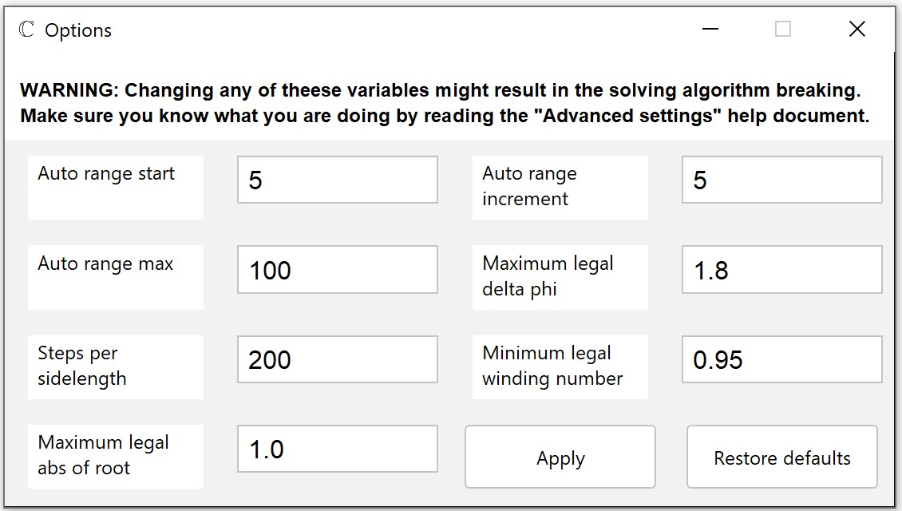

WARNING: Please see the "Winding number algorithm" document first in order to fully understand what your
are doing.
Using advanced solver parameters

There are many factor at play when tuning the solving algorithm. There is a set of defaults hard-coded into the
program, which were chosen by us in order to manage both speed and
accuracy. Still, they sometimes produce results which are inaccurate or wrong. In that case you may try and poke
the numbers a bit, and see what happens. You can always restore the defaults by pressing the approprieate
button.
When you click "Apply" (or press "Enter" key) the values will be stored in a new file ".solverrc" located in
current working directory. This file contains the parameters in a specific order and is loaded whenever you
start the program. If no file is found, then the defaults are loaded. If the file gets corrupted it will be
deleted, so it is not recommended to interact with it in a way different than this menu.
The availible options are as follows:
- "Auto range start" - determines the starting range of the "Auto" version of the solver.
- "Auto range increment" - determines increment that the auto solver applies to the range after prevoius one
fails.
- "Auto range max" - determines the maximum range of the "Auto" version of the solver. After the auto range
passes this value the auto solver will terminate and return nothing. Keep in mind, that at always
least one iteration will hapen.
- "Maximum legal deltaphi" - this algorithm calculates the complex phase change, and it does it a lot.
When the point traveling along the path in output space passes through the positive real axis
clockwise, then the phase "jumps" from close to zero to close to 2PI and the phase change is huge.
The algorithm fights this by reducing those huge jumps to small ones. The problem is that sometimes a large
phase change can occur normally - this value determines how big of a "jump" is
treated as a crossing of the Re+ axis. You can try playing with it if some roots are not being found.
- "Steps per sidelength" - this algorithm draws squares and then "walks" along the image of that square. This
value determines how many "steps" it takes per sidelength. You can try increasing it if some root are not
being found, but doing so will extend processing time.
- "Minimum legal winding number" - math says the winding number is an integer (it counts how many times you
circled a point) or zero; this value determines how big of a winding number is treated as non-zero. You can
try decreasing it if some roots are not being found, but doing so will extend processing time.
- "Maximum legal abs of root" - because of the Riemann sphere (see aproprieate article in the "Math
background" section) this algorith also finds poles. But before it adds a point to the list of solutions it
will first check the absolute value of the function at that point. If the point is a root it should
be very close to zero, and if it isn't then the point is determined to be a pole and not added. This causes
problems with division, where a point very close to a root may have a value much larger than zero. You can
try increasing it when some root are not being found, but it may result in some inaccuracy.